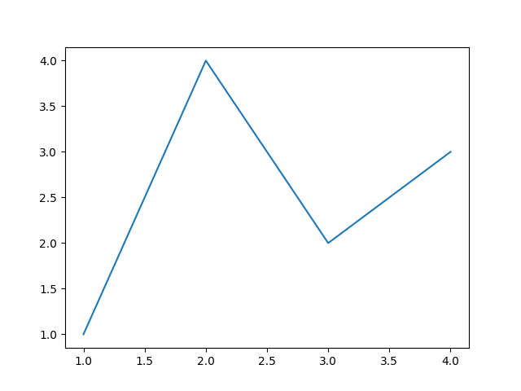
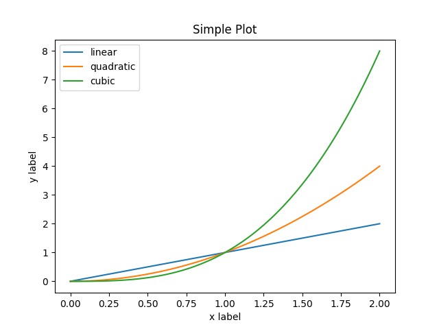
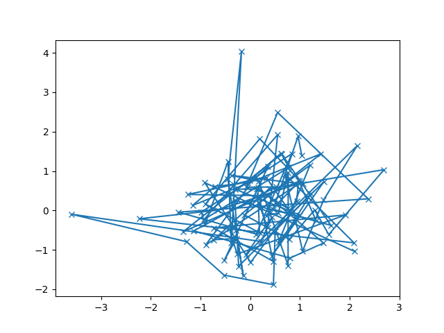
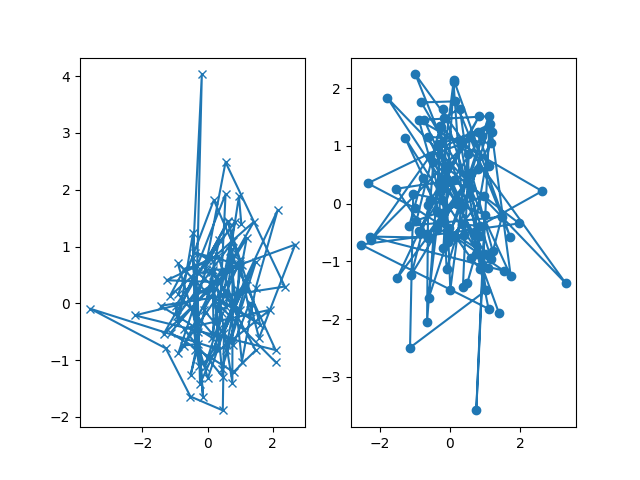

Note
Click here to download the full example code
Usage Guide¶
This tutorial covers some basic usage patterns and best practices to help you get started with Matplotlib.
import matplotlib.pyplot as plt
import numpy as np
A simple example¶
Matplotlib graphs your data on Figures (e.g., windows, Jupyter
widgets, etc.), each of which can contain one or more Axes, an
area where points can be specified in terms of x-y coordinates, or theta-r
in a polar plot, x-y-z in a 3D plot, etc. The simplest way of
creating a figure with an axes is using pyplot.subplots. We can then use
Axes.plot to draw some data on the axes:
fig, ax = plt.subplots() # Create a figure containing a single axes.
ax.plot([1, 2, 3, 4], [1, 4, 2, 3]) # Plot some data on the axes.

Out:
[<matplotlib.lines.Line2D object at 0x7fc6ed08efd0>]
Many other plotting libraries or languages do not require you to explicitly create an axes. For example, in MATLAB, one can just do
plot([1, 2, 3, 4], [1, 4, 2, 3]) % MATLAB plot.
and get the desired graph.
In fact, you can do the same in Matplotlib: for each Axes graphing
method, there is a corresponding function in the matplotlib.pyplot
module that performs that plot on the "current" axes, creating that axes (and
its parent figure) if they don't exist yet. So, the previous example can be
written more shortly as
plt.plot([1, 2, 3, 4], [1, 4, 2, 3]) # Matplotlib plot.

Out:
[<matplotlib.lines.Line2D object at 0x7fc70072c9a0>]
Parts of a Figure¶
Here is a more detailed layout of the components of a Matplotlib figure.

Figure¶
The whole figure. The figure keeps
track of all the child Axes, a group of
'special' artists (titles, figure legends, etc), and the canvas.
(The canvas is not the primary focus. It is crucial as it is the
object that actually does the drawing to get you your plot, but as
the user, it is mostly invisible to you). A figure can contain any
number of Axes, but will typically have
at least one.
The easiest way to create a new figure is with pyplot:
fig = plt.figure() # an empty figure with no Axes
fig, ax = plt.subplots() # a figure with a single Axes
fig, axs = plt.subplots(2, 2) # a figure with a 2x2 grid of Axes
It's convenient to create the axes together with the figure, but you can also add axes later on, allowing for more complex axes layouts.
Axes¶
This is what you think of as 'a plot'. It is the region of the image
with the data space. A given figure
can contain many Axes, but a given Axes
object can only be in one Figure. The
Axes contains two (or three in the case of 3D)
Axis objects (be aware of the difference
between Axes and Axis) which take care of the data limits (the
data limits can also be controlled via the axes.Axes.set_xlim() and
axes.Axes.set_ylim() methods). Each Axes has a title
(set via set_title()), an x-label (set via
set_xlabel()), and a y-label set via
set_ylabel()).
The Axes class and its member functions are the primary entry
point to working with the OO interface.
Axis¶
These are the objects most similar to a number line.
They set graph limits and generate ticks (the marks
on the axis) and ticklabels (strings labeling the ticks). The location of
the ticks is determined by a Locator object and the
ticklabel strings are formatted by a Formatter. The
combination of the correct Locator and Formatter gives very fine
control over the tick locations and labels.
Artist¶
Basically, everything visible on the figure is an artist (even
Figure, Axes, and Axis objects). This includes
Text objects, Line2D objects, collections objects, Patch
objects, etc... When the figure is rendered, all of the
artists are drawn to the canvas. Most Artists are tied to an Axes; such
an Artist cannot be shared by multiple Axes, or moved from one to another.
Types of inputs to plotting functions¶
All of plotting functions expect numpy.array or numpy.ma.masked_array as
input. Classes that are similar to arrays ('array-like') such as pandas
data objects and numpy.matrix may not work as intended. Common convention
is to convert these to numpy.array objects prior to plotting.
For example, to convert a pandas.DataFrame
a = pandas.DataFrame(np.random.rand(4, 5), columns = list('abcde'))
a_asarray = a.values
and to convert a numpy.matrix
b = np.matrix([[1, 2], [3, 4]])
b_asarray = np.asarray(b)
The object-oriented interface and the pyplot interface¶
As noted above, there are essentially two ways to use Matplotlib:
Explicitly create figures and axes, and call methods on them (the "object-oriented (OO) style").
Rely on pyplot to automatically create and manage the figures and axes, and use pyplot functions for plotting.
So one can do (OO-style)
x = np.linspace(0, 2, 100) # Sample data.
# Note that even in the OO-style, we use `.pyplot.figure` to create the figure.
fig, ax = plt.subplots() # Create a figure and an axes.
ax.plot(x, x, label='linear') # Plot some data on the axes.
ax.plot(x, x**2, label='quadratic') # Plot more data on the axes...
ax.plot(x, x**3, label='cubic') # ... and some more.
ax.set_xlabel('x label') # Add an x-label to the axes.
ax.set_ylabel('y label') # Add a y-label to the axes.
ax.set_title("Simple Plot") # Add a title to the axes.
ax.legend() # Add a legend.

Out:
<matplotlib.legend.Legend object at 0x7fc7000e6730>
or (pyplot-style)
x = np.linspace(0, 2, 100) # Sample data.
plt.plot(x, x, label='linear') # Plot some data on the (implicit) axes.
plt.plot(x, x**2, label='quadratic') # etc.
plt.plot(x, x**3, label='cubic')
plt.xlabel('x label')
plt.ylabel('y label')
plt.title("Simple Plot")
plt.legend()

Out:
<matplotlib.legend.Legend object at 0x7fc6ed028e80>
In addition, there is a third approach, for the case when embedding Matplotlib in a GUI application, which completely drops pyplot, even for figure creation. We won't discuss it here; see the corresponding section in the gallery for more info (Embedding Matplotlib in graphical user interfaces).
Matplotlib's documentation and examples use both the OO and the pyplot approaches (which are equally powerful), and you should feel free to use either (however, it is preferable pick one of them and stick to it, instead of mixing them). In general, we suggest to restrict pyplot to interactive plotting (e.g., in a Jupyter notebook), and to prefer the OO-style for non-interactive plotting (in functions and scripts that are intended to be reused as part of a larger project).
Note
In older examples, you may find examples that instead used the so-called
pylab interface, via from pylab import *. This star-import
imports everything both from pyplot and from numpy, so that one
could do
for an even more MATLAB-like style. This approach is strongly discouraged nowadays and deprecated. It is only mentioned here because you may still encounter it in the wild.
If you need to make the same plots over and over again with different data sets, use the recommended signature function below.
def my_plotter(ax, data1, data2, param_dict):
"""
A helper function to make a graph
Parameters
----------
ax : Axes
The axes to draw to
data1 : array
The x data
data2 : array
The y data
param_dict : dict
Dictionary of keyword arguments to pass to ax.plot
Returns
-------
out : list
list of artists added
"""
out = ax.plot(data1, data2, **param_dict)
return out
which you would then use as:
data1, data2, data3, data4 = np.random.randn(4, 100)
fig, ax = plt.subplots(1, 1)
my_plotter(ax, data1, data2, {'marker': 'x'})

Out:
[<matplotlib.lines.Line2D object at 0x7fc6fda91820>]
or if you wanted to have two sub-plots:

Out:
[<matplotlib.lines.Line2D object at 0x7fc6fdda4a60>]
These examples provide convenience for more complex graphs.
Backends¶
What is a backend?¶
A lot of documentation on the website and in the mailing lists refers to the "backend" and many new users are confused by this term. Matplotlib targets many different use cases and output formats. Some people use Matplotlib interactively from the Python shell and have plotting windows pop up when they type commands. Some people run Jupyter notebooks and draw inline plots for quick data analysis. Others embed Matplotlib into graphical user interfaces like PyQt or PyGObject to build rich applications. Some people use Matplotlib in batch scripts to generate postscript images from numerical simulations, and still others run web application servers to dynamically serve up graphs.
To support all of these use cases, Matplotlib can target different outputs, and each of these capabilities is called a backend; the "frontend" is the user facing code, i.e., the plotting code, whereas the "backend" does all the hard work behind-the-scenes to make the figure. There are two types of backends: user interface backends (for use in PyQt/PySide, PyGObject, Tkinter, wxPython, or macOS/Cocoa); also referred to as "interactive backends") and hardcopy backends to make image files (PNG, SVG, PDF, PS; also referred to as "non-interactive backends").
Selecting a backend¶
There are three ways to configure your backend:
The
rcParams["backend"]parameter in yourmatplotlibrcfileThe
MPLBACKENDenvironment variableThe function
matplotlib.use()
Below is a more detailed description.
If there is more than one configuration present, the last one from the
list takes precedence; e.g. calling matplotlib.use() will override
the setting in your matplotlibrc.
Without a backend explicitly set, Matplotlib automatically detects a usable backend based on what is available on your system and on whether a GUI event loop is already running. The first usable backend in the following list is selected: MacOSX, Qt5Agg, Gtk3Agg, TkAgg, WxAgg, Agg. The last, Agg, is a non-interactive backend that can only write to files. It is used on Linux, if Matplotlib cannot connect to either an X display or a Wayland display.
Here is a detailed description of the configuration methods:
Setting
rcParams["backend"]in yourmatplotlibrcfile:backend : qt5agg # use pyqt5 with antigrain (agg) rendering
See also Customizing Matplotlib with style sheets and rcParams.
Setting the
MPLBACKENDenvironment variable:You can set the environment variable either for your current shell or for a single script.
On Unix:
> export MPLBACKEND=qt5agg > python simple_plot.py > MPLBACKEND=qt5agg python simple_plot.py
On Windows, only the former is possible:
> set MPLBACKEND=qt5agg > python simple_plot.py
Setting this environment variable will override the
backendparameter in anymatplotlibrc, even if there is amatplotlibrcin your current working directory. Therefore, settingMPLBACKENDglobally, e.g. in your.bashrcor.profile, is discouraged as it might lead to counter-intuitive behavior.If your script depends on a specific backend you can use the function
matplotlib.use():import matplotlib matplotlib.use('qt5agg')
This should be done before any figure is created, otherwise Matplotlib may fail to switch the backend and raise an ImportError.
Using
usewill require changes in your code if users want to use a different backend. Therefore, you should avoid explicitly callinguseunless absolutely necessary.
The builtin backends¶
By default, Matplotlib should automatically select a default backend which
allows both interactive work and plotting from scripts, with output to the
screen and/or to a file, so at least initially, you will not need to worry
about the backend. The most common exception is if your Python distribution
comes without tkinter and you have no other GUI toolkit installed.
This happens on certain Linux distributions, where you need to install a
Linux package named python-tk (or similar).
If, however, you want to write graphical user interfaces, or a web
application server
(Embedding in a web application server (Flask)), or need a
better understanding of what is going on, read on. To make things more easily
customizable for graphical user interfaces, Matplotlib separates the concept
of the renderer (the thing that actually does the drawing) from the canvas
(the place where the drawing goes). The canonical renderer for user
interfaces is Agg which uses the Anti-Grain Geometry C++ library to
make a raster (pixel) image of the figure; it is used by the Qt5Agg,
GTK3Agg, wxAgg, TkAgg, and macosx backends. An alternative
renderer is based on the Cairo library, used by Qt5Cairo, etc.
For the rendering engines, users can also distinguish between vector or raster renderers. Vector graphics languages issue drawing commands like "draw a line from this point to this point" and hence are scale free. Raster backends generate a pixel representation of the line whose accuracy depends on a DPI setting.
Here is a summary of the Matplotlib renderers (there is an eponymous backend for each; these are non-interactive backends, capable of writing to a file):
Renderer |
Filetypes |
Description |
|---|---|---|
AGG |
png |
raster graphics -- high quality images using the Anti-Grain Geometry engine |
vector graphics -- Portable Document Format |
||
PS |
ps, eps |
vector graphics -- Postscript output |
SVG |
svg |
vector graphics -- Scalable Vector Graphics |
PGF |
pgf, pdf |
|
Cairo |
png, ps, pdf, svg |
To save plots using the non-interactive backends, use the
matplotlib.pyplot.savefig('filename') method.
These are the user interfaces and renderer combinations supported; these are interactive backends, capable of displaying to the screen and using appropriate renderers from the table above to write to a file:
Backend |
Description |
|---|---|
Qt5Agg |
Agg rendering in a Qt5 canvas (requires PyQt5). This
backend can be activated in IPython with |
ipympl |
Agg rendering embedded in a Jupyter widget. (requires ipympl).
This backend can be enabled in a Jupyter notebook with
|
GTK3Agg |
Agg rendering to a GTK 3.x canvas (requires PyGObject,
and pycairo or cairocffi). This backend can be activated in
IPython with |
macosx |
Agg rendering into a Cocoa canvas in OSX. This backend can be
activated in IPython with |
TkAgg |
Agg rendering to a Tk canvas (requires TkInter). This
backend can be activated in IPython with |
nbAgg |
Embed an interactive figure in a Jupyter classic notebook. This
backend can be enabled in Jupyter notebooks via
|
WebAgg |
On |
GTK3Cairo |
Cairo rendering to a GTK 3.x canvas (requires PyGObject, and pycairo or cairocffi). |
wxAgg |
Agg rendering to a wxWidgets canvas (requires wxPython 4).
This backend can be activated in IPython with |
Note
The names of builtin backends are case-insensitive. For example, 'Qt5Agg' and 'qt5agg' are equivalent.
ipympl¶
The Jupyter widget ecosystem is moving too fast to support directly in Matplotlib. To install ipympl:
pip install ipympl
jupyter nbextension enable --py --sys-prefix ipympl
or
conda install ipympl -c conda-forge
See jupyter-matplotlib for more details.
Using non-builtin backends¶
More generally, any importable backend can be selected by using any of the
methods above. If name.of.the.backend is the module containing the
backend, use module://name.of.the.backend as the backend name, e.g.
matplotlib.use('module://name.of.the.backend').
What is interactive mode?¶
Use of an interactive backend (see What is a backend?)
permits--but does not by itself require or ensure--plotting
to the screen. Whether and when plotting to the screen occurs,
and whether a script or shell session continues after a plot
is drawn on the screen, depends on the functions and methods
that are called, and on a state variable that determines whether
Matplotlib is in "interactive mode." The default Boolean value is set
by the matplotlibrc file, and may be customized like any other
configuration parameter (see Customizing Matplotlib with style sheets and rcParams). It
may also be set via matplotlib.interactive(), and its
value may be queried via matplotlib.is_interactive(). Turning
interactive mode on and off in the middle of a stream of plotting
commands, whether in a script or in a shell, is rarely needed
and potentially confusing. In the following, we will assume all
plotting is done with interactive mode either on or off.
Note
Major changes related to interactivity, and in particular the
role and behavior of show(), were made in the
transition to Matplotlib version 1.0, and bugs were fixed in
1.0.1. Here we describe the version 1.0.1 behavior for the
primary interactive backends, with the partial exception of
macosx.
Interactive mode may also be turned on via matplotlib.pyplot.ion(),
and turned off via matplotlib.pyplot.ioff().
Note
Interactive mode works with suitable backends in ipython and in the ordinary Python shell, but it does not work in the IDLE IDE. If the default backend does not support interactivity, an interactive backend can be explicitly activated using any of the methods discussed in What is a backend?.
Interactive example¶
From an ordinary Python prompt, or after invoking ipython with no options, try this:
import matplotlib.pyplot as plt
plt.ion()
plt.plot([1.6, 2.7])
This will pop up a plot window. Your terminal prompt will remain active, so that you can type additional commands such as:
plt.title("interactive test")
plt.xlabel("index")
On most interactive backends, the figure window will also be updated if you
change it via the object-oriented interface. That is, get a reference to the
Axes instance, and call a method of that instance:
ax = plt.gca()
ax.plot([3.1, 2.2])
If you are using certain backends (like macosx), or an older version
of Matplotlib, you may not see the new line added to the plot immediately.
In this case, you need to explicitly call draw()
in order to update the plot:
plt.draw()
Non-interactive example¶
Start a new session as per the previous example, but now turn interactive mode off:
import matplotlib.pyplot as plt
plt.ioff()
plt.plot([1.6, 2.7])
Nothing happened--or at least nothing has shown up on the screen (unless you are using macosx backend, which is anomalous). To make the plot appear, you need to do this:
plt.show()
Now you see the plot, but your terminal command line is
unresponsive; pyplot.show() blocks the input
of additional commands until you manually close the plot
window.
Using a blocking function has benefits to users. Suppose a user
needs a script that plots the contents of a file to the screen.
The user may want to look at that plot, and then end the script.
Without a blocking command such as show(), the script would
flash up the plot and then end immediately, leaving nothing on
the screen.
In addition, non-interactive mode delays all drawing until
show() is called. This is more efficient than redrawing
the plot each time a line in the script adds a new feature.
Prior to version 1.0, show() generally could not be called
more than once in a single script (although sometimes one
could get away with it). For version 1.0.1 and above, this
restriction is lifted, so one can write a script like this:
import numpy as np
import matplotlib.pyplot as plt
plt.ioff()
for i in range(3):
plt.plot(np.random.rand(10))
plt.show()
This makes three plots, one at a time. That is, the second plot will show up once the first plot is closed.
Summary¶
In interactive mode, pyplot functions automatically draw to the screen.
When plotting interactively, if using
object method calls in addition to pyplot functions, then
call draw() whenever you want to
refresh the plot.
Use non-interactive mode in scripts in which you want to
generate one or more figures and display them before ending
or generating a new set of figures. In that case, use
show() to display the figure(s) and
to block execution until you have manually destroyed them.
Performance¶
Whether exploring data in interactive mode or programmatically saving lots of plots, rendering performance can be a challenging bottleneck in your pipeline. Matplotlib provides multiple ways to greatly reduce rendering time at the cost of a slight change (to a settable tolerance) in your plot's appearance. The methods available to reduce rendering time depend on the type of plot that is being created.
Line segment simplification¶
For plots that have line segments (e.g. typical line plots, outlines
of polygons, etc.), rendering performance can be controlled by
rcParams["path.simplify"] (default: True) and rcParams["path.simplify_threshold"] (default: 0.111111111111), which
can be defined e.g. in the matplotlibrc file (see
Customizing Matplotlib with style sheets and rcParams for more information about
the matplotlibrc file). rcParams["path.simplify"] (default: True) is a Boolean
indicating whether or not line segments are simplified at all.
rcParams["path.simplify_threshold"] (default: 0.111111111111) controls how much line segments are simplified;
higher thresholds result in quicker rendering.
The following script will first display the data without any simplification, and then display the same data with simplification. Try interacting with both of them:
import numpy as np
import matplotlib.pyplot as plt
import matplotlib as mpl
# Setup, and create the data to plot
y = np.random.rand(100000)
y[50000:] *= 2
y[np.geomspace(10, 50000, 400).astype(int)] = -1
mpl.rcParams['path.simplify'] = True
mpl.rcParams['path.simplify_threshold'] = 0.0
plt.plot(y)
plt.show()
mpl.rcParams['path.simplify_threshold'] = 1.0
plt.plot(y)
plt.show()
Matplotlib currently defaults to a conservative simplification
threshold of 1/9. To change default settings to use a different
value, change the matplotlibrc file. Alternatively, users
can create a new style for interactive plotting (with maximal
simplification) and another style for publication quality plotting
(with minimal simplification) and activate them as necessary. See
Customizing Matplotlib with style sheets and rcParams for instructions on
how to perform these actions.
The simplification works by iteratively merging line segments
into a single vector until the next line segment's perpendicular
distance to the vector (measured in display-coordinate space)
is greater than the path.simplify_threshold parameter.
Note
Changes related to how line segments are simplified were made in version 2.1. Rendering time will still be improved by these parameters prior to 2.1, but rendering time for some kinds of data will be vastly improved in versions 2.1 and greater.
Marker simplification¶
Markers can also be simplified, albeit less robustly than
line segments. Marker simplification is only available
to Line2D objects (through the
markevery property). Wherever
Line2D construction parameters
are passed through, such as
matplotlib.pyplot.plot() and
matplotlib.axes.Axes.plot(), the markevery
parameter can be used:
The markevery argument allows for naive subsampling, or an
attempt at evenly spaced (along the x axis) sampling. See the
Markevery Demo
for more information.
Splitting lines into smaller chunks¶
If you are using the Agg backend (see What is a backend?),
then you can make use of rcParams["agg.path.chunksize"] (default: 0)
This allows users to specify a chunk size, and any lines with
greater than that many vertices will be split into multiple
lines, each of which has no more than agg.path.chunksize
many vertices. (Unless agg.path.chunksize is zero, in
which case there is no chunking.) For some kind of data,
chunking the line up into reasonable sizes can greatly
decrease rendering time.
The following script will first display the data without any chunk size restriction, and then display the same data with a chunk size of 10,000. The difference can best be seen when the figures are large, try maximizing the GUI and then interacting with them:
import numpy as np
import matplotlib.pyplot as plt
import matplotlib as mpl
mpl.rcParams['path.simplify_threshold'] = 1.0
# Setup, and create the data to plot
y = np.random.rand(100000)
y[50000:] *= 2
y[np.geomspace(10, 50000, 400).astype(int)] = -1
mpl.rcParams['path.simplify'] = True
mpl.rcParams['agg.path.chunksize'] = 0
plt.plot(y)
plt.show()
mpl.rcParams['agg.path.chunksize'] = 10000
plt.plot(y)
plt.show()
Legends¶
The default legend behavior for axes attempts to find the location
that covers the fewest data points (loc='best'). This can be a
very expensive computation if there are lots of data points. In
this case, you may want to provide a specific location.
Using the fast style¶
The fast style can be used to automatically set simplification and chunking parameters to reasonable settings to speed up plotting large amounts of data. The following code runs it:
import matplotlib.style as mplstyle
mplstyle.use('fast')
It is very lightweight, so it works well with other styles. Be sure the fast style is applied last so that other styles do not overwrite the settings:
mplstyle.use(['dark_background', 'ggplot', 'fast'])
Total running time of the script: ( 0 minutes 3.576 seconds)
Keywords: matplotlib code example, codex, python plot, pyplot Gallery generated by Sphinx-Gallery